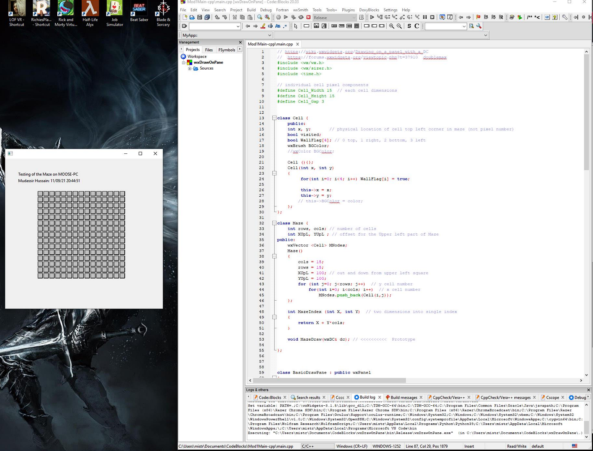
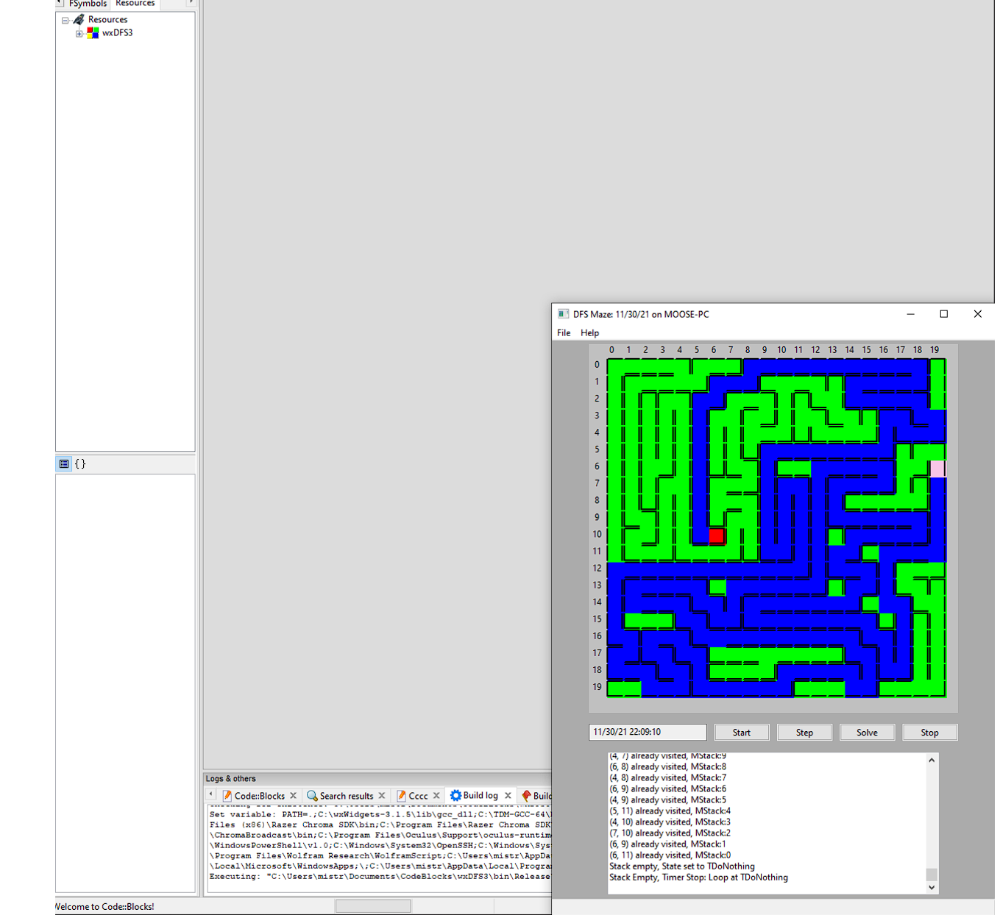

Step 1
Created a maze on a Pane with a two dimensional array of Cells using wxWidgets
{kind=link}
Step 2
Using wxSmith to automatically write framework code in wxWidgets where the algorithm can be implemented. The algorithm checks for available neighbors of a cell. An origin cell is specified and then each neighbor (top, right, bottom, left) is checked to see if it is an available edge. The maze is explored while neighbor edges are available. Cells being explored are marked pink color. The algorithm stops when "No Neighbors" are available.
{kind=link}
Step 3
the previous wxWidgets framework with simple modifications. In this step, we will be clearing the Walls for the Current Cell and also the 'from' Cell. A link for the 'from' cell is saved in the current cell for tracing the solution.

Step 4 (Last Step)
All cells in the Matrix are explored using a stack of available cells. Once all the backtracking is complete, all cells have been explored and the Maze is complete. The a path from any target cell in the Maze can be found to the the graph origin.
{kind=link}
{kind=link}
Resources
Maze Tutorial: https://thecodingtrain.com/challenges/10-dfs-maze-generator
wxWidgets Applications: https://www.wxwidgets.org/about/screenshots/
Programming C++ GUIs with the wxWidgets Library: https://www.informit.com/articles/printerfriendly/606222
wxWidgets online manuals: https://docs.wxwidgets.org/trunk/index.html